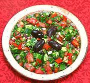

|
Shepherd's SaladSephardic - Djoban | ||||
| Serves: Effort: Sched: DoAhead: |
8 salad ** 1-1/4 hrs Most |
This Sephardic salad combines elements of the Spanish Pippirrana with those of the popular Turkish Çoban salad. It is a good buffet salad, no wilting greens. | |||
|
1-1/4 10 1/2 6 5 2 1/2 1/4 ------ 1/2 5 1/2 1/4 ------ 16 |
# oz t oz oz cl c c --- c T t --- |
Tomatoes Cucumbers (1) Salt Bell Pepper (2) Onion, red Garlic Parsley, flat Mint, fresh -- Dressing (3) Wine Vinegar, red Olive Oil ExtV Salt Pepper -- Garnish Olives, Black (4) |
Salad - (35 min + 30 min chill time)
|
hgv_djoban1 sf52 141206 - www.clovegarden.com
©Andrew Grygus - agryg@clovegarden.com - Linking to
and non-commercial use of this page permitted